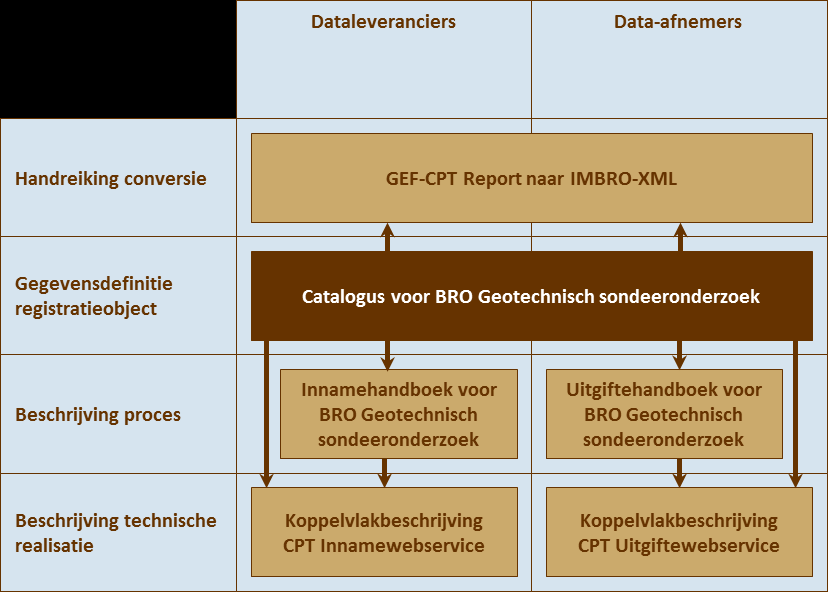
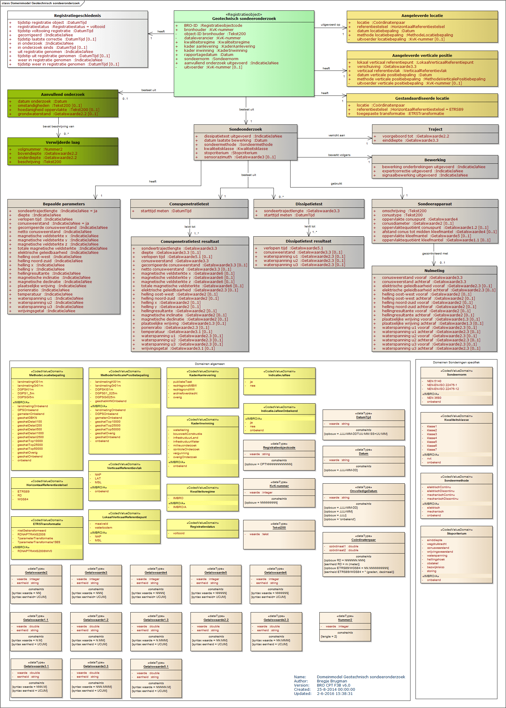

Naamsvermelding-GeenAfgeleideWerken 3.0 Nederland (CC BY-ND 3.0)
Samenvatting
Samenvatting van informatiemodel.
Status van dit document
Deze paragraaf beschrijft de status van dit document ten tijde van publicatie. Het is mogelijk dat er actuelere versies van dit document bestaan. Een lijst van Geonovum publicaties en de laatste gepubliceerde versie van dit document zijn te vinden op http://www.geonovum.nl/wegwijzer/standaarden
Dit is een werkversie die op elk moment kan worden gewijzigd, verwijderd of vervangen door andere documenten. Het is geen door de werkgroep goedgekeurde consultatieversie.
Status van dit document.
1. Inleiding
1.1 Doel en doelgroep
In de basisregistratie ondergrond (BRO) wordt een aantal typen gegevens geregistreerd, de
registratieobjecten. Voor elk van deze registratieobjecten wordt er een gegevenscatalogus gepubliceerd.
De catalogus is de gegevensdefinitie van een registratieobject en beschrijft welke gegevens over dit registratieobject in de BRO zijn opgeslagen. Het is bedoeld voor alle gebruikers van de BRO en moet duidelijk maken welke gegevens er in het
systeem zitten. Aan data-leveranciers moet het vertellen welke gegevens in de basisregistratie ondergrond moeten komen, en aan data-afnemers welke gegevens zij in de basisregistratie ondergrond mogen verwachten. Het document is voor een
breed publiek bedoeld, de informatie moet naast precies ook begrijpelijk zijn.
1.2 Samenhang met andere documentatie
Voor ieder registratieobject worden de volgende beschrijvende documenten opgesteld:
de catalogus
de handboeken voor inname en uitgifte
de koppelvlakbeschrijvingen voor inname en uitgifte.
In de catalogus staan de definities van alle entiteiten en attributen van het registratieobject beschreven. Tevens zijn hierin een beschrijving van de kardinaliteit (het aantal keer dat de entiteit of het attribuut voorkomt), regels
voor het gebruik en de waarden die toegestaan zijn voor de attributen te vinden. Tot slot wordt de samenhang tussen de entiteiten beschreven. De catalogus beschrijft dus de inhoud van de BRO en vormt de basis voor de andere beschrijvende
documenten.
Een handboek voor inname of uitgifte beschrijft het proces dat bij inname of uitgifte van gegevens wordt doorlopen. In een handboek worden ook de gegevens gedefinieerd die betrekking hebben op het proces van inname of uitgifte. Om te
zien wat er aangeleverd moet worden of wat er uitgeleverd kan worden, heeft men de catalogus nodig.
De koppelvlakbeschrijvingen zijn geschreven voor softwareontwikkelaars. Op basis van de twee vorige typen documenten staat hierin beschreven hoe het registratieobject en de bijbehorende transacties worden vertaald naar het technische
koppelvlak dat is gerealiseerd door middel van webservices. De koppelvlakbeschrijving gaat dus in op de technische realisatie van de transacties waarbinnen het registratieobject wordt uitgewisseld.
Naast deze documenten is er een document dat het systeem als geheel beschrijft met als titel BRO-architectuur. In dat document wordt het ontwerp en de algemene werking van de basisregistratie ondergrond beschreven. Het document
BRO-architectuur is alleen nog in een eerste en prille versie beschikbaar.
Voor geotechnisch sondeeronderzoek is er nog een aanvullend document, de handreiking voor conversie. In die handreiking wordt inzichtelijk gemaakt hoe de informatie uit het GEF-CPT formaat naar IMBRO-XML moet worden omgezet. Het GEF-formaat
is de thans in het werkveld gebruikte standaard voor uitwisseling, en IMBRO-XML is het formaat dat de BRO vraagt. Geotechnisch sondeeronderzoek kan ook via het BRO-innameloket worden aangeboden. De dataleverancier kan daar ook GEF-bestanden
aanbieden. In de handreiking voor conversie wordt beschreven waaraan zo’n GEF-bestand moet voldoen.
Deze documenten hangen samen zoals hieronder afgebeeld.

Figuur 1Samenhang tussen documentatie
1.3 Leeswijzer
Hoofdstuk 1 geeft het doel en de doelgroep, de samenhang met andere documenten en de versiehistorie van deze catalogus.
Hoofdstuk 2 behandelt enkele algemene aspecten van het BRO-systeem en behandelt begrippen van algemene aard.
Hoofdstuk 3 legt uit wat geotechnisch sondeeronderzoek is, wat de plaats is van het object in de gegevenssystematiek van de BRO en vertelt wat de benadering is geweest bij het opstellen van de gegevensdefinitie.
Hoofdstuk 4 geeft de definitie van het registratieobject, van de delen waaruit het is opgebouwd, de entiteiten, en van de eigenschappen van die delen, de attributen.
Hoofdstuk 5 ten slotte geeft de definitie van de codelijsten waarnaar in hoofdstuk 4 verwezen wordt.
2. Algemene kenmerken en begrippen
2.1 Opzet van het systeem
De basisregistratie ondergrond vormt een schakel in de informatieketen die begint bij de productie van gegevens. De geproduceerde gegevens worden door een dataleverancier, en onder de verantwoordelijkheid van een bronhouder, aan de registerbeheerder
van de BRO geleverd. De bronhouder kan zelf dataleverancier zijn of besluiten andere partijen een volmacht voor het leveren van gegevens te geven. De beheerder van de BRO registreert de aangeleverde gegevens en levert ze voor (her)gebruik
door aan allerlei afnemers.
De opzet van het systeem moet begrepen worden vanuit de verantwoordelijkheden die in de keten zijn belegd. De aangeleverde gegevens vallen onder de verantwoordelijkheid van de bronhouder en het is de bedoeling dat de registerbeheerder die
gegevens niet verandert. De registerbeheerder moet echter wel gegevens toevoegen om het systeem te kunnen beheren en hij kan gegevens toevoegen om de afnemers goed van dienst te kunnen zijn.
Bij wet is geregeld dat de basisregistratie ondergrond zo wordt opgezet dat er onderscheid bestaat tussen de gegevens die aan de registerbeheerder zijn aangeleverd en de gegevens die de registerbeheerder aan de afnemers verstrekt. Het systeem
valt uiteen in twee grote deelsystemen, het register brondocumenten ondergrond en de registratie
ondergrond (zie figuur 2).
Figuur 2Het systeem van de BRO
Dataleveranciers leveren brondocumenten aan. De brondocumenten worden in het register brondocumenten ondergrond opgeslagen. De gegevens uit de brondocumenten worden samen met de gegevens die de registerbeheerder toevoegt in de registratie
ondergrond vastgelegd. De registratie ondergrond bevat alle gegevens die aan afnemers geleverd worden.
Met deze opzet verkrijgt het systeem de nodige flexibiliteit. Zo kan een object in de registratie ondergrond gegevens bevatten die uit meer dan één brondocument afkomstig zijn en bij uitgifte kunnen gegevens uit verschillende objecten met
elkaar gecombineerd worden. Ook is het mogelijk met het brondocument gegevens op te slaan die alleen voor de bronhouder en de aanleverende partij van belang zijn.
De gegevensdefinitie dekt alle gegevens die opgenomen zijn in de registratie ondergrond. Verreweg de meeste gegevens komen uit het brondocument dat de dataleverancier aanlevert en een paar gegevens komen voort uit de overdracht van het brondocument
aan de registerbeheerder. Aan de aangeleverde gegevens worden enkele gegevens door de registerbeheerder toegevoegd. Als een gegeven is toegevoegd door de BRO wordt dat in de beschrijving expliciet opgenomen.
Alle gegevens in de registratie ondergrond worden uitgegeven, maar niet alle afnemers kunnen alle gegevens geleverd krijgen. De gegevens die niet aan alle afnemers worden uitgeleverd zijn de gegevens die alleen nodig zijn in de communicatie
tussen de registerbeheerder enerzijds en de dataleveranciers en bronhouders anderzijds. In de toelichting wordt expliciet vermeld welke gegevens niet worden uitgeleverd.
2.2 Registratieobject
Het registratieobject is dé eenheid in de data-architectuur van de basisregistratie ondergrond. Voor de registerbeheerder is het de elementaire bouwsteen van het systeem dat hij moet beheren.
Een registratieobject verwijst naar een eenheid van informatie die onder de verantwoordelijkheid van één bronhouder valt en die met een bepaald doel is of wordt gemaakt. Het is in directe of indirecte zin gedefinieerd in de ruimte en
dat wil zeggen dat een registratieobject een plaats op het aardoppervlak heeft of dat het gekoppeld is aan een ander type registratieobject met een plaats op het aardoppervlak.
Een registratieobject is niet alleen in de ruimte maar ook in de tijd gedefinieerd. Het leven van een registratieobject begint op het moment dat de gegevens zijn geregistreerd en dat is zo kort mogelijk nadat de gegevens zijn geproduceerd.
De levensduur van een registratieobject, en de veranderlijkheid van de gegevens verschilt van object tot object. Een grondwatermonitoringsput bijvoorbeeld, kan tientallen jaren gebruikt worden voor het meten van grondwaterstanden en in
die periode kunnen er nieuwe gegevens ontstaan. Dat betekent dat de gegevens van de put in de BRO gedurende zijn hele levensduur bijgewerkt moeten kunnen worden. Aan de andere kant van het spectrum zijn er objecten waarvan alle gegevens
in een keer worden vastgelegd. Geotechnisch sondeeronderzoek is daar een voorbeeld van. Sondeeronderzoek is eenmalig onderzoek en het resultaat ervan kan al na één of enkele dagen aan de opdrachtgever worden overhandigd.
2.3 Registratiedomein
Registratieobjecten worden in de BRO gegroepeerd in domeinen. Vooralsnog worden zes domeinen onderscheiden:
bodem- en grondonderzoek
bodemkwaliteit
grondwatermonitoring
grondwatergebruik
mijnbouwwet
modellen.
De domeinen zijn vanuit het oogpunt van beheer van belang voor de ordening van het systeem. Daarnaast zijn zij nuttig in de communicatie met de partijen die bij de realisatie van het systeem betrokken zijn.
2.4 Kwaliteitsregime
In de basisregistratie ondergrond worden niet alleen gegevens geregistreerd die dateren van na de datum waarop de wet van kracht is geworden. Ook oudere gegevens zullen in de basisregistratie ondergrond worden opgenomen. De noodzaak daartoe
ligt in de wet verankerd. Die schrijft voor dat de gegevens uit de eerder bestaande systemen DINO en BIS zo veel mogelijk naar de BRO moeten worden overgezet. Verder staat de wet toe dat bronhouders tot vijf jaar na de inwerkingtreding
van de wet historische gegevens ter registratie mogen aanbieden.
Historische gegevens kunnen niet altijd voldoen aan de strikte regels die de BRO stelt. Zo kan het voorkomen dat voor gegevens die volgens de strikte regels van de BRO verplicht zijn, geen waarde bekend is. Om de verwerking van de twee categorieën
gegevens naast elkaar mogelijk te maken, worden twee kwaliteitsregimes gehanteerd. Voor de aanlevering van gegevens volgens de strikte regels geldt het IMBRO-regime. Bij de aanlevering van historische gegevens wordt geaccepteerd dat een
aantal formeel verplichte gegevens geen waarde heeft. Voor deze gegevens wordt het IMBRO/A-regime gehanteerd en dat kent dus minder strikte regels.
De introductie van de twee kwaliteitsregimes geeft de aanleverende partijen gedurende een bepaalde periode een zekere mate van vrijheid. Het kan bijvoorbeeld praktisch blijken het IMBRO/A regime te hanteren voor gegevens die weliswaar pas
na de datum waarop de wet inwerking is getreden zijn geproduceerd maar die voortkomen uit opdrachten die al voor die datum zijn gegeven. Ook kan het voorkomen dat historische gegevens wel aan alle strikte voorwaarden voldoen en dan is
het wenselijk de gegevens onder IMBRO regime aan te leveren.
De periode waarin de aanleverende partijen die vrijheid hebben wordt de
transitieperiode genoemd. Over de precieze invulling van de transitieperiode zijn nog geen afspraken gemaakt, maar het streven is de transitieperiode te laten eindigen vijf jaar nadat bij wet geregeld is dat een bepaald type registratieobject
onder de BRO valt. Na afloop van de transitieperiode kan alleen onder het strikte IMBRO-regime worden aangeleverd.
2.5 Formele en materiële historie
Binnen het stelsel van basisregistraties maakt men onderscheid tussen de materiële historie en de formele historie van een object.
Het begrip materiële historie wordt gebruikt om de veranderingen van eigenschappen van een object in de werkelijkheid aan te duiden. De materiële historie van een object wordt, voor zover relevant, in de basisregistratie ondergrond
vastgelegd. Echter, niet alle registratieobjecten hebben een materiële historie. Een voorbeeld van een registratieobject zonder materiële historie is geotechnisch sondeeronderzoek. Een voorbeeld van een registratieobject met materiële
historie is de grondwatermonitoringsput.
Het begrip formele historie wordt gebruikt voor de veranderingen van eigenschappen van een object in de registratie zelf. Die meeste van die veranderingen gaan terug op veranderingen in de werkelijkheid, en de formele historie geeft
aan wanneer de veranderingen geregistreerd zijn. Veranderingen in de registratie die niet het gevolg zijn van een verandering in de werkelijkheid, hebben altijd te maken met correcties. Het kan bijvoorbeeld gebeuren dat een dataleverancier
er achter komt dat er een onjuiste waarde was geregistreerd en dan levert hij een verbetering aan. Bij correctie wordt het betreffende gegeven in de BRO overschreven en is de oude waarde van het gegeven niet meer beschikbaar voor de afnemers.
Alle registratieobjecten hebben een formele historie en die wordt in de registratie ondergrond globaal vastgelegd. Het gaat per definitie om gegevens die de registerbeheerder toevoegt aan de gegevens uit het brondocument. De wijze waarop de
formele geschiedenis precies wordt vastgelegd verschilt per type registratieobject.
2.6 Authentiek gegeven
In de wet is een aantal gegevens expliciet als authentiek aangeduid. Dit wordt in de gegevensdefinitie nader uitgewerkt; verreweg de meeste gegevens zijn authentiek.
Met de aanduiding authentiek wordt, in formele termen, tot uitdrukking gebracht dat:
het gegeven in samenhang met andere gegevens door een groot aantal bestuursorganen in verschillende processen wordt gebruikt en derhalve bestemd is voor informatie-uitwisseling tussen bestuursorganen;
de verantwoordelijkheid voor betrouwbaarheid van het gegeven eenduidig geregeld is;
het gegeven onderworpen is aan intern en extern kwaliteitsonderzoek, en
het gegeven zich leent voor verplicht gebruik door bestuursorganen en eenmalige verstrekking door burgers en bedrijven aan de overheid.
Kortom, in de praktijk mag een gebruiker van de gegevens er van uitgaan dat de authentieke gegevens correct zijn, en de gegevensdefinitie moet de gebruiker de informatie geven die voor een goed begrip daarvan nodig is. Heeft een gebruiker
echter gerede twijfel over de juistheid van een authentiek gegeven dan wordt verwacht dat hij de registerbeheerder daarvan op de hoogte brengt. Bestuursorganen zijn zelfs verplicht om bij gerede twijfel over de juistheid van een authentiek
gegeven (of het ontbreken van zo’n gegeven) daarvan melding te maken.
2.7 Coördinaten en referentiestelsels
De registratieobjecten van de BRO zijn gedefinieerd in de ruimte en dat wil zeggen dat een object zelf een plaats op het aardoppervlak, een locatie, heeft, of dat het gekoppeld is aan een ander type registratieobject met een locatie. Afhankelijk
van het type registratieobject, wordt de locatie geregistreerd als een punt, een lijn of een vlak.
De locatie is de horizontale positie van een object. Voor bepaalde objecten is het voldoende dat alleen die horizontale positie wordt vastgelegd, maar voor veel objecten is ook de verticale positie van belang.
Posities worden vastgelegd in coördinaten en die zijn gedefinieerd in een bepaald referentiestelsel.
Er zijn verschillende typen referentiestelsels. Zo spreekt men van horizontale referentiestelsels (2D), verticale referentiestelsels (1D), gecombineerde referentiestelsels (2D, 1D) en werkelijke 3D referentiestelsels. In Nederland worden de
horizontale en de verticale component van een positie in een afzonderlijk stelsel uitgedrukt. Het is vandaag de dag mogelijk met GPS een positie in een 3D-referentiestelsel vast te leggen, maar de wenselijkheid over te stappen naar het
gebruik van 3D wordt nog nergens gevoeld.
2.7.1 Referentiestelsels voor de horizontale positie
In Nederland zijn traditioneel verschillende referentiestelsels voor de horizontale positie in gebruik. In 2009, bij de eerste voorbereidingen voor de totstandkoming van de BRO, is al vastgesteld dat de verscheidenheid aan referentiestelsels
de BRO voor problemen stelt omdat de registratie dan niet makkelijk op een eenduidige manier bevraagd kan worden. In de BRO worden namelijk zowel gegevens met een locatie op land als gegevens met een locatie op zee geregistreerd. In
de toenmalige praktijk werden op land en op zee verschillende stelsels gebruikt. Op land werd RD gebruikt en op zee waren verschillende stelsels in gebruik, waarvan WGS84 de belangrijkste was.
In 2009 was ook al bekend dat de Europese kaderrichtlijn INSPIRE de lidstaten vraagt de gegevens in Europa in één referentiestelsel uit te gaan wisselen, nl. in ETRS89. Tegen die achtergrond heeft de registerbeheerder een toekomstgerichte
keuze gemaakt en is besloten het systeem zo in te richten dat de registratie bevraagd gaat worden in ETRS89.
De keuze die de BRO heeft gemaakt blijkt gezien de ontwikkelingen de goede te zijn geweest. Sinds 2013 wordt er door de drie belangrijkste autoriteiten in Nederland op het gebied van referentiestelsels, het Kadaster, de Dienst der Hydrografie
en Rijkswaterstaat, gewerkt aan de totstandkoming van nieuwe afspraken. Die afspraken moeten in lijn zijn met Europese afspraken en leiden tot een kleiner aantal referentiestelsels. Concreet betekent dit dat Nederland over zal gaan
op het ETRS-stelsel, en op termijn afscheid neemt van de referentiestelsels RD en WGS84.
Het besluit het BRO-systeem zo in te richten dat de registratie bevraagd gaat worden in ETRS89, betekent niet dat de gegevens ook in ETRS89 aangeleverd moeten worden. De BRO voorziet een periode van transitie waarin de aanleverende partijen
zelf bepalen wanneer zij overstappen op ETRS89. Die periode zal naar verwachting jaren duren. Om de transitie te ondersteunen hanteert de BRO de volgende spelregels:
Gegevens mogen in een beperkt aantal referentiestelsels worden aangeleverd (RD, WGS84 en ETRS89).
voor locaties op land wordt alleen RD of ETRS89 toegestaan.
voor locaties op zee wordt alleen WGS84 of ETRS89 toegestaan.
De aangeleverde coördinaten worden in de registratie opgeslagen.
De aangeleverde coördinaten van de locatie worden door de basisregistratie ondergrond getransformeerd naar het ETRS89 referentiestelsel.
De getransformeerde coördinaten worden naast de aangeleverde coördinaten opgeslagen.
Bij de getransformeerde coördinaten wordt ook een identificatie van de gebruikte transformatiemethode opgeslagen.
Als de coördinaten in ETRS89 zijn aangeleverd, dan staat bij aangeleverde en getransformeerde positie dezelfde informatie. Voor de locatie worden de getransformeerde coördinaten en de aangeleverde coördinaten beide aan de data-afnemers
verstrekt.
2.7.2 Referentiestelsels voor de verticale positie
In Nederland zijn voor verticale posities op land en zee verschillende referentiestelsels in gebruik. Op land wordt NAP gebruikt en op zee is het gebruikelijk posities uit te drukken t.o.v. het gemiddeld zeeniveau (MSL, Mean Sea Level).
Er zijn nog geen ontwikkelingen die het wenselijk maken een referentiestelsel voor de verticale positie op land en zee te gaan hanteren. Wel is het zo dat de kaderrichtlijn INSPIRE de voorkeur uitspreekt een verticale positie op zee
uit te drukken t.o.v. LAT (Lowest Astronomical Tide). De BRO staat gebruik van deze referentie naast MSL daarom toe.
2.8 Gegevens op land en op zee
De basisregistratie ondergrond bevat gegevens over de ondergrond van Nederland en zijn zgn. Exclusieve Economische Zone (EEZ). De EEZ is het gebied op de Noordzee waar Nederland economische rechten heeft. Voor de referentiestelsels die bij
aanlevering worden toegestaan, is het van belang te weten of de locatie van een object op zee of op land ligt.
Als scheidingslijn tussen land en zee wordt in de BRO de UNCLOS-basislijn gehanteerd. Het beheer van de basislijn valt onder de verantwoordelijkheid van de Dienst der Hydrografie van het ministerie van Defensie. Deze dienst voert die taak
uit op basis van het Zeerechtverdrag van de Verenigde Naties uit 1982, dat in het Engels de United Nations Convention on the Law of the Sea (UNCLOS) heet.
De basislijn is opgebouwd uit de nulmeterdieptelijn zoals weergegeven op de zeekaarten en enkele rechte basislijnen die onder meer de monding van de Westerschelde en de wateren tussen de Waddeneilanden afsluiten.
De grens tussen land en zee is veranderlijk. De Dienst der Hydrografie stelt de grens opnieuw vast wanneer daartoe voldoende aanleiding is. De BRO hanteert bij inname de meest recente versie van de UNCLOS-basislijn (de UNCLOS-basislijn van
10 maart 2016) en controleert daarmee of de juiste referentiestelsels gebruikt worden.
Tussen het moment waarop de locatie van een object wordt bepaald en het moment waarop het gegeven in de basisregistratie ondergrond wordt vastgelegd verloopt enige tijd. In die periode kan de positie van de UNCLOS-basislijn opnieuw zijn vastgesteld,
en dan ontstaat er een discrepantie die bij het aanleveren van gegevens tot problemen kan leiden. Wanneer dit probleem zich voordoet, wordt de dataleverancier gevraagd contact op te nemen met de registratiebeheerder om gezamenlijk tot
een oplossing te komen.
Een soortgelijk probleem doet zich voor met betrekking tot de begrenzing van Nederland, met name van het Nederlands territoir. De landsgrenzen van Nederland worden ieder jaar op 1 januari vastgesteld door het Kadaster (de BRO hanteert de landgrenzen
van 1 januari 2015). De BRO controleert bij inname of een object in Nederland ligt en hanteert daarbij de actuele grenzen. Ook wanneer dit probleem zich voordoet, wordt de dataleverancier gevraagd contact op te nemen met de registratiebeheerder
om gezamenlijk tot een oplossing te komen.
2.9 Nauwkeurigheid van getalswaarden
Voor zinvol gebruik van gegevens met een getalswaarde is het noodzakelijk dat de nauwkeurigheid van die gegevens bekend is.
Het begrip nauwkeurigheid laat zich in deze context het best omschrijven als de juistheid van een gemeten of berekende waarde. In de meeste processen waarin de waarde van een gegeven wordt bepaald, kan de afwijking van de daadwerkelijke waarde
slechts via een kalibratie- of statistisch proces worden verkregen. Het resultaat omvat dan niet alleen één van de mogelijke realisaties van een meetwaarde maar ook informatie over de mogelijke spreiding van de meetwaarden.
De BRO gaat er vanuit dat de producenten van gegevens de metingen en berekeningen uitvoeren binnen een stelsel van afspraken dat binnen het desbetreffende werkveld is vastgelegd. Uitgangspunt is dat ook de eisen waaraan de gegevens op het
gebied van nauwkeurigheid moeten voldoen in afspraken zijn vastgelegd. Dat kunnen praktische werkafspraken zijn, maar ook afspraken die vertaald zijn naar ISO- en NEN normen. In de gegevensdefinitie wordt in beginsel verwezen naar die
normen. Waar deze normen niet voorzien in afspraken over de nauwkeurigheid, stelt de BRO hieraan specifieke eisen. Deze zijn dan vermeld in de gegevensdefinitie.
2.10 Authenticiteit en verplichte waarde
Voor alle in de BRO opgenomen gegevens is aangegeven of ze authentiek zijn. Ook is voor alle gegevens aangegeven of ze een waarde moéten hebben. Dat laat zien dat er gegevens zijn die authentiek zijn maar geen waarde hoeven te hebben. Maar
hoe zit dat dan, want voor authentieke gegevens geldt voor overheidsinstellingen een verplicht gebruik. Hoe kan het gebruik van een attribuut nu verplicht zijn als een waarde mag ontbreken in de BRO?
Op die vraag is maar een antwoord. Wanneer een authentiek gegeven geen waarde heeft moet de gebruiker ervan uitgaan dat de reden is dat een bepaald gegeven niet is geproduceerd. Dat geval kan zich uiteraard alleen voordoen wanneer er vrijheid
van beslissen bestaat bij de opdrachtgever of de uitvoerder. Een voorbeeld uit geotechnisch sondeeronderzoek is het resultaat van een dissipatietest. Het is de opdrachtgever die beslist of er een dissipatietest moet worden uitgevoerd.
Heeft hij bepaald dat dat niet hoeft, dan zal er ook geen resultaat kunnen zijn.
Voor de duidelijkheid, als er wel een waarde is dan moet die ook in de BRO worden opgenomen. Als een overheidsinstelling gerede twijfel heeft of een authentiek attribuut terecht geen waarde heeft, moet deze daarop terugmelden.
3. Geotechnisch sondeeronderzoek
3.1 Bodem- en grondonderzoek
Geotechnisch sondeeronderzoek is een van de vijf registratieobjecten in het domein bodem- en grondonderzoek. In dat domein gaat het om onderzoek dat er op gericht is gegevens te produceren over de opbouw en de eigenschappen van bodem en ondergrond
zonder dat daarvoor direct een bepaald wettelijk of beleidsmatig kader bestaat. Vaak wordt het onderzoek uitgevoerd omdat men de opbouw en de eigenschappen van de ondergrond moet kennen voor het realiseren van projecten in de grond-, weg-
en waterbouw, of voor het onderhoud van bestaande infrastructuur.
[...]
3.2 Sonderen
Geotechnisch sondeeronderzoek is de formele naam die in de BRO gebruikt wordt en het begrip verwijst naar een onderzoekstechniek die gewoonlijk sonderen wordt genoemd. Bij sonderen wordt de informatie direct in het veld verzameld. Sondeeronderzoek
is binnen het domein van de geotechniek ontwikkeld. Bij dit type onderzoek wordt een sondeerconus gelijkmatig de grond ingedrukt en terwijl de conus naar beneden gaat, worden quasi-continu waarnemingen gedaan van fysieke grootheden.
Een registratieobject is de belangrijkste eenheid van informatie in de basisregistratie ondergrond. Een registratieobject bestaat uit delen (entiteiten), en de delen hebben eigenschappen (attributen). Om het geotechnisch sondeeronderzoek als
informatieobject goed te kunnen definiëren, wordt vanuit een bepaalde benadering gedacht. Deze benadering wordt hieronder toegelicht.
[...]
3.4 Domeinmodel
3.4.1 Algemeen
Vanuit de geschetste benadering is het registratieobject in volledigheid beschreven en gemodelleerd. Dat laatste wil niet anders zeggen dan dat het object op inzichtelijke en samenhangende manier is opgesplitst in delen om duidelijk te
kunnen maken waaruit de informatie is opgebouwd.
Modellering van informatie kent verschillende invalshoeken. In de catalogus wordt het inhoudelijke perspectief gekozen omdat dat met name waarde heeft in de communicatie tussen mensen. Zo’n model wordt in de basisregistratie ondergrond
een domeinmodel genoemd. Uit het domeinmodel wordt een technisch model afgeleid dat ook meeweegt dat informatiesystemen efficiënt met elkaar moeten kunnen spreken. Het meer technische model heet productmodel en dat staat
aan de basis van de technische documentatie.
Een domeinmodel maakt niet alleen de definitie van de informatie-inhoud gemakkelijker, het dient ook om inzicht te geven in de keuzen die gemaakt zijn bij het bepalen van welke gegevens van belang worden geacht, en welke niet. Omdat het
een goed overzicht geeft, wordt het domeinmodel opgenomen in de gegevensdefinitie van een registratieobject. Voor het domeinmodel wordt de UML notatie gebruikt. Met wat kennis van de gebruikte symbolen is het makkelijk te lezen. In
hoofdstuk 4 worden de gegevens in het model nader beschreven.
Het domeinmodel (zie afbeelding) beschrijft het object zoals dat in de registratie ondergrond is vastgelegd. Het model beschrijft een object dat voldoet aan het strikte kwaliteitsregime (IMBRO). Eventuele bijzonderheden voor IMBRO/A zijn
niet in het domeinmodel zichtbaar, maar worden bij de uitwerking in hoofdstuk 4 wel expliciet beschreven. Het domeinmodel laat ook zien welke gegevens alleen aan de dataleverancier en de bronhouder worden uitgeleverd.
In het domeinmodel wordt de kardinaliteit van attributen en entiteiten gegeven. De kardinaliteit geeft aan hoe vaak een gegeven voorkomt. De meeste gegevens hebben kardinaliteit 1 en dat betekent dat een gegeven precies een keer voorkomt.
Sommige gegevens mogen een of meer keer voorkomen, die hebben kardinaliteit 1..*. Een derde categorie vormen de gegevens die kardinaliteit 0..1 hebben. Een dergelijk gegeven komt 1 keer voor of niet. De laatste categorie heeft kardinaliteit
0..*, en een dergelijk gegeven kan 0, 1 of meer keren voorkomen.
In het domeinmodel is de kardinaliteit van entiteiten consequent opgenomen; de vier varianten komen alle voor. Bij attributen komen maar twee varianten voor, kardinaliteit 1 en kardinaliteit 0..1. Om het geheel overzichtelijk te houden
is de standaardwaarde kardinaliteit 1 niet opgenomen, en wordt alleen kardinaliteit 0..1 vermeld.
De kardinaliteit in het domeinmodel moet overigens altijd in samenhang met de regels die in de definitie van het gegeven zijn opgenomen worden begrepen. De kardinaliteit en de regels bepalen samen of een gegeven al dan niet aanwezig is.
Om het model makkelijker te kunnen lezen wordt hier een globale beschrijving van het registratieobject en de belangrijkste entiteiten gegeven.
3.4.2 Geotechnisch sondeeronderzoek
Geotechnisch sondeeronderzoek is het geheel van gegevens dat betrekking heeft op een specifiek sondeeronderzoek dat op een specifieke locatie in Nederland is uitgevoerd en dat door of onder de verantwoordelijkheid van een bepaalde
bronhouder is aangeleverd aan de registerbeheerder van de BRO en vervolgens onder zijn verantwoordelijkheid in de registratie ondergrond is opgenomen. De activiteiten van het sondeeronderzoek omvatten in ieder geval het op locatie
doen van metingen met een sondeerapparaat en de uiteindelijke rapportage van de resultaten aan de opdrachtgever. Gegevens over de plaats waar het onderzoek is uitgevoerd worden over verschillende entiteiten verdeeld.
3.4.3 Registratiegeschiedenis
[...]

Figuur 3Domeinmodel geotechnisch sondeeronderzoek
4. Catalogus
Noot: Over deze catalogus
Deze catalogus is automatisch samengesteld op basis van het UML model "SampleBase" door Imvertor OS 1.27.1.2017xxxx op July 24, 2017 at 14:59:47.
Wanneer je technische fouten of onvolkomenheden aantreft, geef dit dan door aan arjan@linkedmatter.com en geef de code
"green-SampleBase-1.0.0-2-20130318-20170724-155947" door. Voor inhoudelijke fouten neem contact op met het modellenteam: github@basisregistratieondergrond.nl.
4.1 Featuretypes
4.1.1 FeatureType Bike
Name
Bike
Alternative name
Bicycle
Origin
Definition
A human-powered, pedal-driven, single-track vehicle, having two wheels attached to a frame, one behind the other.